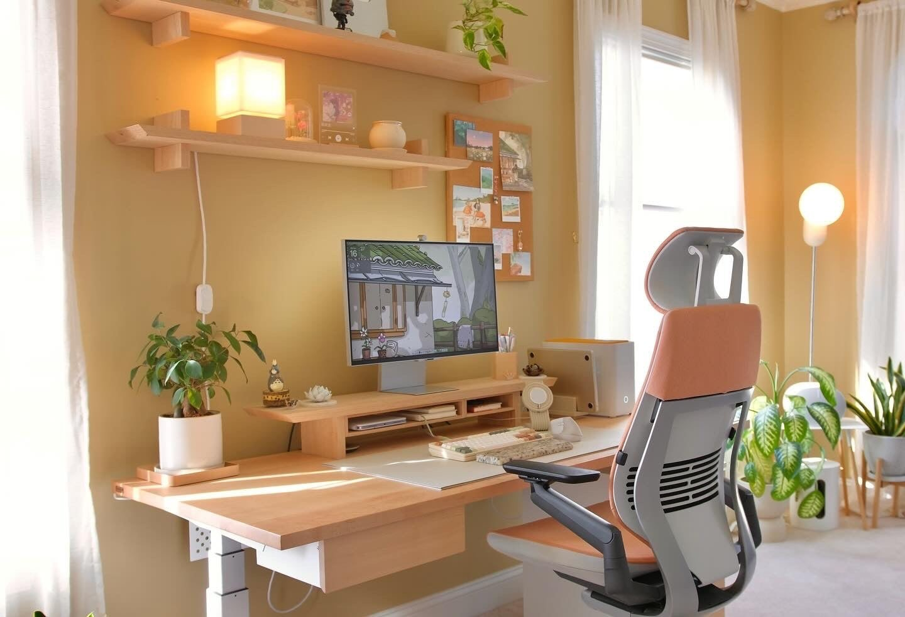
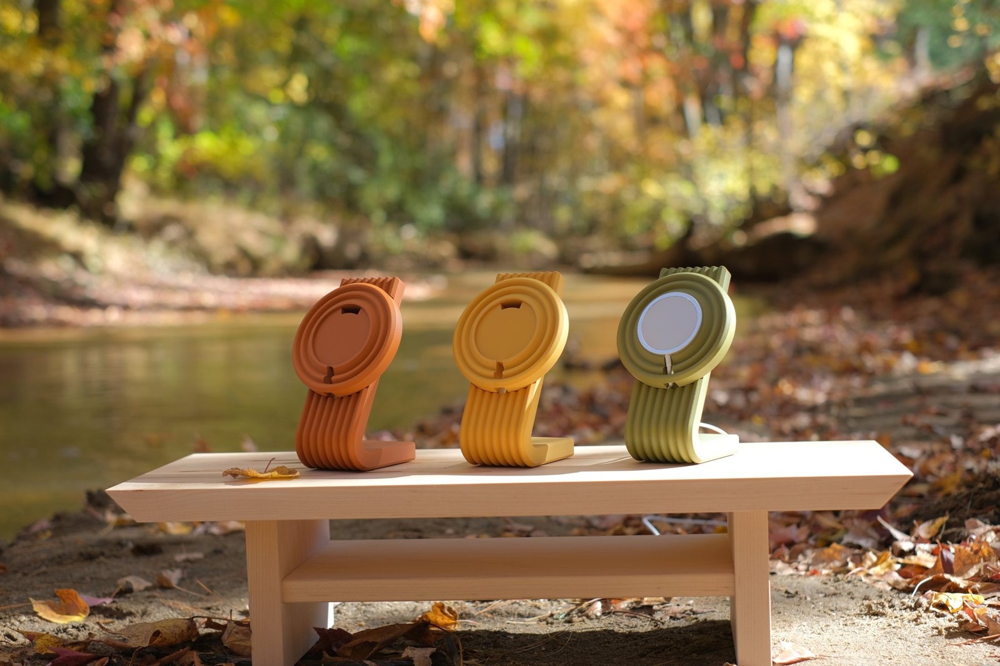

Hi, I’m Maisy
It started with one cozy desk in 2020. Today I share how I make a space feel like home on YouTube, and make the pieces for it by hand with my family at Cozyleigh Studios.

Every piece I reach for, and where it’s from.
Matcha, journaling and quiet mornings.
Stay close